CSS staat voor Cascading Style Sheets. Waar HTML de inhoud en structuur van een pagina bepaalt, bepaalt CSS de vormgeving: kleuren, lettertypes, afstanden, randen, de plaats van tags op het scherm, …
Door inhoud (HTML) en vormgeving (CSS) te scheiden:
-
kan je met één CSS-bestand de opmaak van een volledige website bepalen;
-
pas je de stijl van alle pagina’s in één keer aan;
-
blijft je HTML kort en overzichtelijk.
In dit hoofdstuk leer je:
-
hoe je CSS aan een HTML-pagina koppelt;
-
hoe een CSS-regel opgebouwd is;
-
hoe je met selectoren de juiste tags kiest;
-
kleuren en tekst opmaken;
-
tags positioneren met
position; -
een navigatiebalk en een dropdown-menu maken;
-
je website aanpassen aan elk scherm met media queries;
-
tags vlot schikken en uitlijnen met flexbox.
1. CSS koppelen aan HTML
Er zijn drie manieren om CSS toe te voegen.
1.1. Inline
Met het style-attribuut op één tag:
<p style="color: red;">Deze tekst is rood.</p>Dit werkt, maar is moeilijk te onderhouden: je moet elke tag apart aanpassen.
1.2. Intern
In een style-tag in de head:
<head>
<style>
p {
color: red;
}
</style>
</head>Dit geldt voor één pagina.
1.3. Extern (aanbevolen)
In een apart bestand, bijvoorbeeld style.css, dat je koppelt met een link-tag in de head:
<head>
<meta charset="UTF-8">
<title>Mijn website</title>
<link rel="stylesheet" href="style.css">
</head>p {
color: red;
}Alle pagina’s die naar style.css verwijzen, krijgen dezelfde opmaak. Dit is de manier die je in de rest van de cursus gebruikt.
2. De opbouw van een CSS-regel
h1 { (1)
color: navy; (2)
font-size: 32px; (3)
} (4)| 1 | De selector bepaalt op welke tags de regel van toepassing is: hier alle h1-tags. |
| 2 | Een declaratie bestaat uit een eigenschap (property), een dubbelpunt en een waarde, afgesloten met een puntkomma. |
| 3 | Je kan zoveel declaraties onder elkaar zetten als je wil. |
| 4 | De accolades omsluiten alle declaraties van de regel. |
Commentaar in CSS schrijf je zo:
/* Dit is commentaar in CSS */3. Selectoren
3.1. Tag-selector
Selecteert alle tags van een bepaald type.
p {
line-height: 1.5;
}3.2. Class-selector
Een class geef je in HTML met het class-attribuut. In CSS schrijf je een punt voor de naam.
Dezelfde class mag op veel tags staan, en één tag mag meerdere classes hebben.
<p class="waarschuwing">Opgelet: de winkel is gesloten op maandag.</p>
<p class="waarschuwing groot">Uitverkoop!</p>.waarschuwing {
color: darkred;
}
.groot {
font-size: 24px;
}3.3. ID-selector
Een id is uniek: hij mag maar één keer voorkomen op een pagina. In CSS schrijf je een hekje voor de naam.
<header id="hoofding">...</header>#hoofding {
background-color: black;
}
Gebruik voor opmaak bijna altijd classes. Een id gebruik je vooral voor links naar een plaats op de pagina en in JavaScript.
|
3.4. Combinaties
/* Meerdere selectoren tegelijk (groeperen) */
h1, h2, h3 {
font-family: Georgia, serif;
}
/* Alle a-tags die ergens in een nav staan */
nav a {
text-decoration: none;
}
/* Alle p-tags met class intro */
p.intro {
font-weight: bold;
}Wanneer je twee selectoren combineert om een tag te vinden via zijn plaats ten opzichte van een andere tag, spreken we van een combinator:
| Combinator | Voorbeeld | Selecteert |
|---|---|---|
spatie (descendant) |
|
alle |
|
|
alleen de |
|
|
de |
|
|
alle |
Zo kan je tags opmaken zonder dat ze zelf een id of class nodig hebben:
<table class="scores">
<tr><th>Naam</th><th>Punten</th></tr>
<tr><td>Emma</td><td>17</td></tr>
</table>.scores th { /* alle th-tags in de tabel met class scores */
background-color: navy;
color: white;
}
.scores td { /* alle td-tags in die tabel */
text-shadow: 1px 1px 2px gray;
}3.5. Pseudo-classes
Een pseudo-class selecteert een tag in een bepaalde toestand.
a:hover { /* als de muis over de link gaat */
color: orange;
}
input:focus { /* als het invoerveld geselecteerd is */
border-color: blue;
}
li:first-child { /* de eerste li-tag */
font-weight: bold;
}
tr:nth-child(even) { /* elke even rij van een tabel */
background-color: #f2f2f2;
}4. Kleuren
Je kan een kleur op verschillende manieren schrijven:
h1 {
color: tomato; /* een kleurnaam */
color: #ff6347; /* hexadecimaal: rood, groen, blauw */
color: rgb(255, 99, 71); /* rgb: elk kanaal van 0 tot 255 */
color: rgba(255, 99, 71, 0.5); /* met transparantie van 0 tot 1 */
color: hsl(9, 100%, 64%); /* tint, verzadiging, lichtheid */
}-
colorbepaalt de kleur van de tekst. -
background-colorbepaalt de achtergrondkleur.
Een hexadecimale kleur bestaat uit drie paren: #RRGGBB. Elk paar gaat van 00 (niets) tot ff (maximaal). Dus #ff0000 is rood, #000000 is zwart en #ffffff is wit.
| In VS Code klik je op het gekleurde vierkantje naast een kleur om een kleurkiezer te openen. |
5. Tekst
body {
font-family: "Segoe UI", Arial, sans-serif; (1)
font-size: 16px;
line-height: 1.6; (2)
color: #333333;
}
h1 {
font-weight: bold; (3)
text-align: center; (4)
text-transform: uppercase; (5)
letter-spacing: 2px;
}
a {
text-decoration: none; (6)
}| 1 | Een lijst van lettertypes. Is het eerste niet beschikbaar op de computer van de bezoeker, dan wordt het volgende gebruikt. Eindig altijd met een algemene familie: serif, sans-serif of monospace. |
| 2 | De regelafstand: 1.6 keer de lettergrootte. |
| 3 | normal of bold, of een getal van 100 tot 900. |
| 4 | left, center, right of justify. |
| 5 | uppercase, lowercase of capitalize. |
| 6 | Verwijdert de lijn onder links. |
5.1. Google Fonts
Op fonts.google.com vind je honderden gratis lettertypes.
Kies een lettertype, klik op Get font → Get embed code en kopieer de link-tags naar je head, voor je eigen stylesheet:
<link rel="preconnect" href="https://fonts.googleapis.com">
<link rel="preconnect" href="https://fonts.gstatic.com" crossorigin>
<link href="https://fonts.googleapis.com/css2?family=Poppins:wght@400;700&display=swap" rel="stylesheet">
<link rel="stylesheet" href="style.css">body {
font-family: "Poppins", sans-serif;
}6. Positioneren
Voor elke tag op de pagina beantwoordt de browser twee vragen:
-
Neemt de tag plaats in? Schuiven de andere tags opzij om plaats voor hem te maken, of gedragen ze zich alsof hij er niet is?
-
Wat is het referentiepunt? Ten opzichte van wat wordt de tag geplaatst: zijn eigen plaats, een andere tag, of het browservenster?
Met de eigenschap position bepaal je het antwoord op die twee vragen.
Als je begrijpt hoe dat werkt, kan je elke positie-opdracht oplossen.
6.1. De normale flow
Zonder position plaatst de browser alle tags in de normale flow.
Hij leest de HTML van boven naar onder en zet alle tags volgens deze twee regels:
-
blok-tags (
div,p,h1, …) komen onder elkaar en nemen de volledige breedte; -
inline tags (
span,a,strong, …) komen naast elkaar, in de lopende tekst.
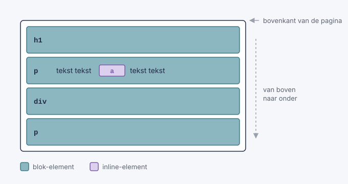
Elke tag neemt plaats in: de volgende tag begint pas waar de vorige eindigt. Is de inhoud langer dan het venster, dan kan je scrollen, en schuift alles in de flow mee.
6.2. Het coördinatensysteem
Als je een tag verplaatst, gebruik je vier eigenschappen: top, right, bottom en left.
Elke eigenschap is een afstand tussen een rand van het referentiepunt en dezelfde rand van de tag.
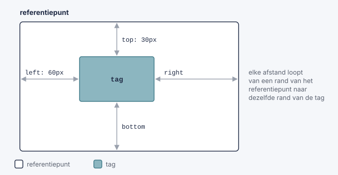
-
top: 30px: de bovenkant van de tag staat 30px onder de bovenkant van het referentiepunt. -
left: 60px: de linkerkant van de tag staat 60px van het referentiepunt. -
right: 0: de rechterkant van de tag raakt de rechterkant van het referentiepunt. -
Een negatieve waarde verschuift in de andere richting:
top: -20pxgaat naar boven. -
Een percentage is een percentage van de grootte van het referentiepunt:
left: 50%is halverwege de breedte.
Denk aan top en left als "afstand van" en niet als "richting naar". left: 60px schuift de tag dus naar rechts, weg van de linkerkant.
|
Gebruik meestal één verticale (top of bottom) en één horizontale eigenschap (left of right).
In de normale flow (position: static) worden deze vier eigenschappen genegeerd.
6.3. De vijf waarden van position
Elke waarde van position is een ander antwoord op de twee vragen van hierboven:
position |
Neemt plaats in? | Referentiepunt | Scrolt mee met de pagina? |
|---|---|---|---|
|
ja |
geen: de tag staat in de normale flow |
ja |
|
ja, op zijn oorspronkelijke plaats |
zijn eigen oorspronkelijke plaats |
ja |
|
nee |
de dichtstbijzijnde bovenliggende tag met een |
ja |
|
nee |
het browservenster |
nee |
|
ja |
zijn plaats in de flow, tot hij de rand van het venster raakt |
tot hij blijft plakken |
6.3.1. static: het standaardgedrag
static is de standaardwaarde: elke tag heeft position: static, tenzij je zelf iets anders instelt.
Je hoeft het dus nooit te schrijven. Een tag met static staat gewoon in de normale flow, precies zoals de browser de HTML van boven naar onder leest:
-
blok-tags (
div,p,h1,section, …) beginnen op een nieuwe regel, komen onder elkaar en nemen de volledige breedte van de bovenliggende tag; -
inline tags (
span,a,strong,img, …) komen naast elkaar in de lopende tekst en zijn maar zo breed als hun inhoud. Is de regel vol, dan gaan ze verder op de volgende regel; -
de volgorde in de HTML bepaalt de volgorde op het scherm: wat eerst in de HTML staat, staat eerst (bovenaan of links);
-
elke tag neemt plaats in: tags overlappen elkaar nooit, de volgende tag begint pas waar de vorige eindigt;
-
de tag scrolt mee met de rest van de pagina.
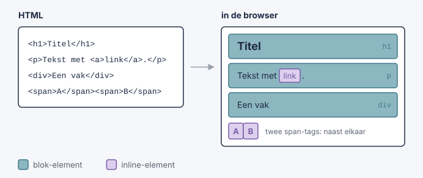
De afstand tussen tags regel je bij static dus niet met top of left (die worden genegeerd), maar met margin en padding.
.vak {
position: static; /* mag je weglaten: dit is de standaard */
top: 50px; /* heeft GEEN effect bij static */
margin-top: 50px; /* dit werkt wel: 50px extra ruimte boven het vak */
}Je schrijft position: static alleen als je een andere position weer ongedaan wilt maken, bijvoorbeeld in een media query.
Probeer een opmaak eerst op te lossen met de normale flow (met margin, padding of Bootstrap). Gebruik pas een andere position als dat niet lukt.
|
Voorbeeld: position: static uitproberen op w3schools
6.3.2. relative: verschuiven vanaf de eigen plaats
De tag wordt eerst normaal in de flow geplaatst. Daarna wordt hij verschoven, vertrekkend van die plaats. De andere tags merken daar niets van: zijn oorspronkelijke plaats blijft bezet, alsof er een onzichtbare kopie achterblijft.
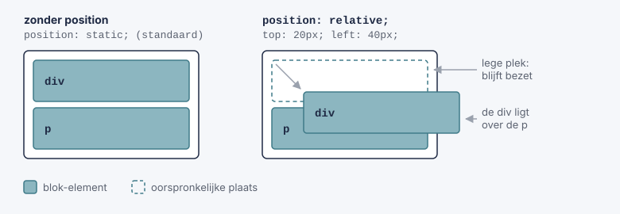
.vak {
position: relative;
top: 20px; /* 20px lager dan zijn normale plaats */
left: 40px; /* 40px meer naar rechts dan zijn normale plaats */
}relative heeft nog een tweede, heel belangrijke rol: de tag wordt het referentiepunt voor tags met position: absolute die erin zitten (zie hieronder).
Voorbeeld: position: relative uitproberen op w3schools
6.3.3. absolute: uit de flow, geplaatst in een referentiepunt
De tag wordt uit de flow gehaald. De andere tags schuiven op alsof hij er niet is. Daarna wordt hij geplaatst ten opzichte van zijn referentiepunt. De browser zoekt dat zo:
-
Kijk naar de bovenliggende tag. Heeft die een
positiondie nietstaticis? Dan is dat het referentiepunt. -
Zo niet, kijk naar de tag daarboven, enzovoort.
-
Vind je er geen, dan is de pagina het referentiepunt.
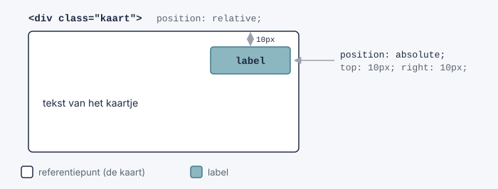
.kaart {
position: relative; /* maakt van het kaartje het referentiepunt */
}
.kaart .label {
position: absolute;
top: 10px;
right: 10px; /* rechtsboven in het kaartje */
}Laat je position: relative bij .kaart weg, dan staat het label rechtsboven in de pagina. Het patroon bovenliggende tag relative, tag erin `absolute` gebruik je heel vaak.
Heeft een tag met absolute geen gepositioneerde bovenliggende tag, dan is de pagina het referentiepunt. Zo plaats je een tag tegen de rand van de pagina:
.zijbalk {
position: absolute;
top: 0;
right: 0; /* tegen de rechterrand van de pagina */
}Voorbeeld: position: absolute uitproberen op w3schools
6.3.4. fixed: vast in het venster
Een tag met fixed wordt ook uit de flow gehaald, maar zijn referentiepunt is altijd het browservenster.
Omdat het venster niet meescrolt, blijft de tag op dezelfde plaats op het scherm staan terwijl de rest van de pagina eronder schuift.
Zo maak je bijvoorbeeld een menu dat altijd zichtbaar blijft of een knop "Terug naar boven".
.terug-knop {
position: fixed;
bottom: 20px;
right: 20px; /* altijd rechtsonder in het venster */
}Voorbeeld: position: fixed uitproberen op w3schools
6.3.5. sticky: eerst normaal, dan vastgeplakt
Een sticky tag staat eerst gewoon in de flow en scrolt mee. Zodra hij de afstand bereikt die je opgeeft, blijft hij plakken.
nav {
position: sticky;
top: 0; /* plakt vast zodra hij de bovenkant van het venster raakt */
}Voorbeeld: position: sticky uitproberen op w3schools
6.4. Een tag centreren met positie
Met wat je nu weet, kan je een tag precies in het midden van zijn referentiepunt zetten. Dat gaat in twee stappen:
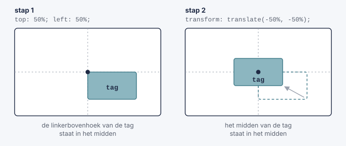
.midden {
position: fixed; /* of absolute */
top: 50%; (1)
left: 50%;
transform: translate(-50%, -50%); (2)
}| 1 | Een percentage bij top en left is een percentage van het referentiepunt. De linkerbovenhoek van de tag komt dus in het midden te staan. |
| 2 | Een percentage bij translate is een percentage van de tag zelf. De tag schuift de helft van zijn eigen breedte naar links en de helft van zijn eigen hoogte naar boven. |
Met fixed blijft de tag in het midden van het scherm staan, ook als je scrolt. Met absolute staat hij in het midden van zijn referentiepunt.
6.5. Lagen: z-index
Tags die uit de flow gehaald zijn, kunnen over andere tags heen liggen. Je kan de pagina dus zien als een stapel lagen, met een derde as die naar jou toe wijst.
-
Een gepositioneerde tag (niet
static) ligt boven tags in de normale flow. -
Liggen twee gepositioneerde tags over elkaar, dan ligt de tag die het laatst in de HTML staat bovenaan.
-
Met
z-indexbepaal je het zelf: een hoger getal ligt bovenaan.
.popup {
position: fixed;
z-index: 10; /* ligt boven .zijbalk */
}
.zijbalk {
position: absolute;
z-index: 1;
}z-index werkt alleen op tags met een position die niet static is.
6.6. Samengevat: welke position kies ik?
Stel jezelf de twee vragen van het begin:
| Wat wil je? | Gebruik |
|---|---|
De tag een beetje verschuiven, zonder dat de rest verandert |
|
De tag op een vaste plaats binnen een andere tag zetten |
|
De tag tegen een rand van de pagina zetten |
|
De tag op het scherm laten staan terwijl je scrolt |
|
De tag laten meescrollen tot hij bovenaan blijft plakken |
|
Tags gewoon onder of naast elkaar zetten |
geen |
Gebruik position niet om een volledige pagina op te bouwen: laat tags zoveel mogelijk in de normale flow staan. position gebruik je voor tags die bovenop of buiten de normale indeling moeten staan.
|
7. Navigatie
Bijna elke website heeft een navigatiebalk: een reeks links naar de andere pagina’s van de site.
Een navigatiebalk is eigenlijk gewoon een lijst met links. Daarom schrijf je hem in HTML met een ul en li-tags. Met CSS maak je er daarna een mooie balk van.
<nav>
<ul>
<li><a class="actief" href="index.html">Home</a></li>
<li><a href="nieuws.html">Nieuws</a></li>
<li><a href="contact.html">Contact</a></li>
<li><a href="over.html">Over ons</a></li>
</ul>
</nav>
De tag nav heeft zelf geen opmaak. Hij vertelt de browser (en bijvoorbeeld een schermlezer voor blinden) dat de links erin de navigatie van de site zijn.
|
7.1. Stap 1: de lijst opkuisen
Een ul toont standaard bolletjes, en de browser zet er een margin en padding rond. Voor een navigatiebalk wil je dat niet:
nav ul {
list-style-type: none; /* geen bolletjes */
margin: 0; /* geen ruimte buiten de lijst */
padding: 0; /* geen inspringing links */
}Dit is de basis voor elke navigatiebalk, verticaal of horizontaal.
7.2. Verticale navigatiebalk
Bij een verticale navigatiebalk staan de links onder elkaar, bijvoorbeeld in een zijbalk.
nav ul {
list-style-type: none;
margin: 0;
padding: 0;
width: 200px; /* breedte van de zijbalk */
background-color: #f1f1f1;
}
nav li a {
display: block; (1)
color: black;
padding: 8px 16px;
text-decoration: none; (2)
}
nav li a:hover:not(.actief) { (3)
background-color: #555;
color: white;
}
nav li a.actief { (4)
background-color: #04aa6d;
color: white;
}| 1 | Een a-tag is een inline tag: hij is maar zo breed als zijn tekst. Met display: block wordt de volledige rij klikbaar en kan je er padding en width aan geven. |
| 2 | Haalt de onderlijning van de link weg. |
| 3 | Als de muis over een link gaat, verandert de kleur. Met :not(.actief) sluit je de actieve link uit. |
| 4 | De class actief geef je aan de link van de pagina waar je nu bent. Zo ziet de bezoeker waar hij zich bevindt. |
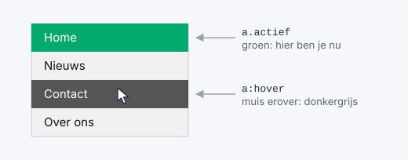
Wil je dat de zijbalk de volledige hoogte van het venster inneemt en blijft staan als je scrolt? Combineer dan met wat je over position geleerd hebt:
nav ul {
position: fixed; /* blijft staan als je scrolt */
height: 100%; /* volledige hoogte van het venster */
overflow: auto; /* scrolbalk als er te veel links zijn */
width: 200px;
}
main {
margin-left: 200px; /* anders schuift de inhoud onder de zijbalk */
}Meer voorbeelden: verticale navigatiebalken op w3schools
7.3. Horizontale navigatiebalk
Bij een horizontale navigatiebalk staan de links naast elkaar, meestal bovenaan de pagina.
li-tags zijn blok-tags en komen dus onder elkaar. Er zijn twee manieren om ze naast elkaar te krijgen.
7.3.1. Manier 1: inline
De eenvoudigste manier: maak van de li-tags inline tags.
nav li {
display: inline; /* naast elkaar, zoals woorden in een zin */
}Nadeel: inline tags krijgen niet goed een padding of width. Daarom gebruik je meestal manier 2.
7.3.2. Manier 2: float
Met float: left schuift elke li zo ver mogelijk naar links, naast de vorige.
nav ul {
list-style-type: none;
margin: 0;
padding: 0;
overflow: hidden; (1)
background-color: #333;
}
nav li {
float: left; (2)
}
nav li a {
display: block; (3)
color: white;
text-align: center;
padding: 14px 16px;
text-decoration: none;
}
nav li a:hover {
background-color: #111;
}
nav li a.actief {
background-color: #04aa6d;
}| 1 | Tags met float worden uit de flow gehaald, waardoor de ul geen hoogte meer heeft en de achtergrondkleur verdwijnt. Met overflow: hidden blijft de ul rond de li-tags passen. |
| 2 | De li-tags komen naast elkaar. |
| 3 | Zoals bij de verticale balk: het hele vak wordt klikbaar en krijgt padding. |
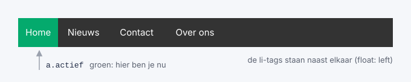
Wil je één link (bijvoorbeeld "Aanmelden") helemaal rechts? Geef die li dan float: right.
|
Ook hier kan je position gebruiken: met position: fixed; top: 0; width: 100%; blijft de balk bovenaan het venster staan. Met position: sticky; top: 0; scrolt hij eerst mee en blijft hij daarna bovenaan plakken.
Meer voorbeelden: horizontale navigatiebalken op w3schools
7.4. Dropdown-menu
Een dropdown-menu is een lijst met links die pas verschijnt als je met de muis over een knop gaat.
Je hebt er niets nieuws voor nodig: het is een combinatie van position, display en de pseudo-class :hover.
<div class="dropdown">
<button class="dropknop">Vakken</button>
<div class="dropdown-inhoud">
<a href="wiskunde.html">Wiskunde</a>
<a href="informatica.html">Informatica</a>
<a href="frans.html">Frans</a>
</div>
</div>.dropdown {
position: relative; (1)
display: inline-block; (2)
}
.dropknop {
background-color: #04aa6d;
color: white;
padding: 16px;
font-size: 16px;
border: none;
}
.dropdown-inhoud {
display: none; (3)
position: absolute; (4)
min-width: 160px;
background-color: #f9f9f9;
box-shadow: 0px 8px 16px 0px rgba(0, 0, 0, 0.2); (5)
z-index: 1; (6)
}
.dropdown-inhoud a {
display: block;
color: black;
padding: 12px 16px;
text-decoration: none;
}
.dropdown-inhoud a:hover {
background-color: #ddd;
}
.dropdown:hover .dropdown-inhoud { (7)
display: block;
}
.dropdown:hover .dropknop {
background-color: #3e8e41;
}| 1 | De .dropdown wordt het referentiepunt voor het menu (dat absolute is). |
| 2 | De .dropdown is maar zo breed als de knop, en niet de volledige breedte van de pagina. |
| 3 | Het menu is standaard onzichtbaar. |
| 4 | Het menu wordt uit de flow gehaald: het duwt de rest van de pagina niet naar beneden, maar ligt erover. Omdat er geen top of left staat, verschijnt het net onder de knop. |
| 5 | Een schaduw, zodat het menu boven de pagina lijkt te zweven. |
| 6 | Het menu ligt boven de andere tags van de pagina. |
| 7 | Gaat de muis over de .dropdown (de knop of het menu), dan wordt het menu zichtbaar. De spatie betekent: het menu dat in de .dropdown staat. |
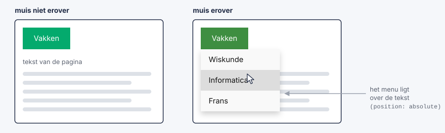
Wil je het menu rechts uitlijnen onder de knop (handig voor een knop helemaal rechts op de pagina)? Geef .dropdown-inhoud dan right: 0;.
|
7.4.1. Dropdown in een navigatiebalk
Je kan een dropdown ook in een horizontale navigatiebalk zetten. Je geeft de li met het menu de class dropdown:
<nav>
<ul>
<li><a href="index.html">Home</a></li>
<li><a href="nieuws.html">Nieuws</a></li>
<li class="dropdown">
<a href="#" class="dropknop">Vakken</a>
<div class="dropdown-inhoud">
<a href="wiskunde.html">Wiskunde</a>
<a href="informatica.html">Informatica</a>
<a href="frans.html">Frans</a>
</div>
</li>
</ul>
</nav>nav ul {
list-style-type: none;
margin: 0;
padding: 0;
background-color: #333;
}
nav li {
display: inline-block; (1)
}
nav li a {
display: inline-block;
color: white;
padding: 14px 16px;
text-decoration: none;
}
nav li a:hover,
.dropdown:hover .dropknop {
background-color: red;
}
.dropdown-inhoud {
display: none;
position: absolute;
min-width: 160px;
background-color: #f9f9f9;
box-shadow: 0px 8px 16px 0px rgba(0, 0, 0, 0.2);
z-index: 1;
}
.dropdown-inhoud a {
display: block; (2)
color: black;
}
.dropdown-inhoud a:hover {
background-color: #f1f1f1;
}
.dropdown:hover .dropdown-inhoud {
display: block;
}| 1 | Hier gebruiken we inline-block in plaats van float: de li-tags staan naast elkaar én kunnen padding krijgen. |
| 2 | De links in het menu staan wél onder elkaar. |
Meer voorbeelden: dropdowns op w3schools
| In Bootstrap (zie verder) zijn navigatiebalken en dropdowns kant-en-klaar. Toch is het nuttig om te weten hoe ze werken: dan kan je ze ook aanpassen. |
8. Transities
Bij Navigatie maakte je een navigatiebalk waarvan de links van kleur veranderen als je er met de muis over gaat, en een dropdown-menu dat verschijnt. Die veranderingen gebeuren in één klap: de ene kleur springt meteen naar de andere.
Met een transitie laat je zo’n verandering geleidelijk gebeuren, over een tijd die je zelf kiest. De kleur vloeit dan rustig over naar de nieuwe kleur, een knop groeit langzaam, een menu schuift zachtjes open.
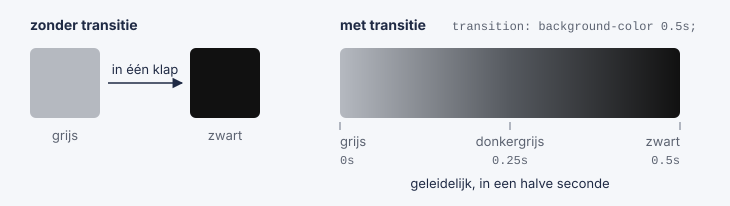
In dit deel leer je:
-
wat een transitie is en wanneer ze start;
-
hoe lang een transitie duurt (
transition-duration); -
welke eigenschappen je laat veranderen (
transition-property); -
hoe de snelheid verloopt (
transition-timing-function); -
hoe je een transitie later laat starten (
transition-delay); -
tags verplaatsen, vergroten en draaien met
transform; -
transities toepassen op je navigatiebalk en dropdown-menu.
Meer uitleg en voorbeelden: CSS-transities op w3schools
8.1. Je eerste transitie
Een transitie heeft altijd twee dingen nodig:
-
de eigenschap die moet veranderen, bijvoorbeeld
widthofbackground-color; -
de duur van de verandering, in seconden (
s) of milliseconden (ms).
<div class="vak">Ga met je muis over mij</div>.vak {
width: 100px;
height: 100px;
background-color: tomato;
transition: width 2s; (1)
}
.vak:hover {
width: 300px; (2)
}| 1 | Als width verandert, gebeurt dat geleidelijk, over 2 seconden. |
| 2 | Gaat de muis over het vak, dan wordt het 300px breed. |
Gaat de muis over het vak, dan groeit het in twee seconden van 100px naar 300px. Haal je de muis weg, dan krimpt het in twee seconden terug.
Zet de transition op de gewone selector (.vak), niet op .vak:hover. Zo werkt de transitie in de twee richtingen: bij het erover gaan én bij het weggaan. Staat ze alleen bij :hover, dan springt het vak bij het weggaan in één klap terug.
|
Een transitie start altijd wanneer een eigenschap een andere waarde krijgt. Meestal gebeurt dat met een pseudo-class zoals :hover of :focus. Later, met JavaScript, kan je ook een class toevoegen of weghalen.
Vergeet je de duur, dan is die 0s en zie je dus geen transitie.
|
8.2. Meerdere eigenschappen tegelijk
Wil je meer dan één eigenschap geleidelijk laten veranderen? Zet ze dan na elkaar, gescheiden door een komma. Elke eigenschap kan een eigen duur krijgen.
.vak {
width: 100px;
height: 100px;
background-color: tomato;
transition: width 2s, height 4s, background-color 1s;
}
.vak:hover {
width: 300px;
height: 300px;
background-color: royalblue;
}Hier wordt het vak in 2 seconden breder, in 4 seconden hoger en in 1 seconde blauw.
Wil je alle eigenschappen die veranderen dezelfde transitie geven? Gebruik dan all:
.vak {
transition: all 0.5s;
}
all is handig, maar soms laat het dingen bewegen die je niet verwacht. Schrijf je de eigenschappen zelf uit, dan houd je beter de controle.
|
Niet elke eigenschap kan geleidelijk veranderen. Alles met een getal (width, height, margin, padding, top, left, font-size, opacity, …) of een kleur (color, background-color, border-color, …) kan dat wel. Een eigenschap zoals display (van none naar block) of font-family kan dat niet: daar bestaat geen tussenstap, dus die springt meteen.
8.3. Het verloop van de snelheid: transition-timing-function
Een transitie hoeft niet aan één gelijke snelheid te gebeuren. Met transition-timing-function kies je hoe de snelheid verloopt:
| Waarde | Verloop |
|---|---|
|
traag beginnen, dan snel, dan traag eindigen |
|
van begin tot einde dezelfde snelheid |
|
traag beginnen, snel eindigen |
|
snel beginnen, traag eindigen |
|
traag beginnen en traag eindigen |
|
een eigen verloop, met vier getallen tussen 0 en 1 |
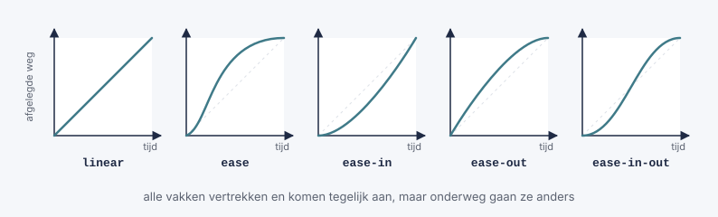
#vak1 { transition: width 2s; transition-timing-function: linear; }
#vak2 { transition: width 2s; transition-timing-function: ease; }
#vak3 { transition: width 2s; transition-timing-function: ease-in; }
#vak4 { transition: width 2s; transition-timing-function: ease-out; }
#vak5 { transition: width 2s; transition-timing-function: ease-in-out; }Zet je vijf zulke vakken onder elkaar en ga je er met de muis over, dan zie je goed het verschil: ze vertrekken en komen allemaal tegelijk aan, maar onderweg gaan ze anders.
Voor de meeste effecten op een website (knoppen, menu’s) voelen ease en ease-out het meest natuurlijk aan. Met linear lijkt een beweging al snel mechanisch.
|
8.4. Later starten: transition-delay
Met transition-delay wacht de browser eerst een tijdje voor de transitie begint.
.vak {
width: 100px;
transition: width 3s;
transition-delay: 1s; /* wacht 1 seconde, en groei dan in 3 seconden */
}
.vak:hover {
width: 300px;
}Een vertraging is handig bij een dropdown-menu: zo klapt het niet meteen dicht als je muis per ongeluk even naast het menu komt (zie verder).
Voorbeeld: transition-delay uitproberen op w3schools
8.5. De vier eigenschappen samengevat
Een transitie bestaat uit vier eigenschappen:
| Eigenschap | Betekenis | Standaardwaarde |
|---|---|---|
|
welke eigenschap(pen) geleidelijk veranderen |
|
|
hoe lang de verandering duurt |
|
|
hoe de snelheid verloopt |
|
|
hoe lang de browser wacht voor hij begint |
|
Je kan ze apart schrijven:
.vak {
transition-property: width;
transition-duration: 2s;
transition-timing-function: linear;
transition-delay: 1s;
}Maar meestal schrijf je ze samen in één regel met de verkorte eigenschap transition, in deze volgorde:
.vak {
transition: width 2s linear 1s;
/* | | | |
| | | +-- delay
| | +--------- timing-function
| +------------ duration
+------------------ property */
}Je moet niet alles invullen: wat je weglaat, krijgt de standaardwaarde. transition: width 2s; is dus hetzelfde als transition: width 2s ease 0s;.
| Staan er twee tijden in de regel, dan is de eerste altijd de duur en de tweede de vertraging. |
8.6. Transitie en transform
Een transitie wordt pas echt leuk in combinatie met transform. Met transform kan je een tag verplaatsen, vergroten of draaien, zonder dat de andere tags opschuiven: net zoals bij position: relative blijft de oorspronkelijke plaats bezet.
| Functie | Wat doet ze? | Voorbeeld |
|---|---|---|
|
verschuift de tag |
|
|
vergroot of verkleint de tag ( |
|
|
draait de tag, in graden ( |
|
Je kan ze ook combineren, gescheiden door een spatie: transform: scale(1.2) rotate(10deg);.
translate ken je al van Een tag centreren met positie: daar gebruikte je transform: translate(-50%, -50%) om een tag te centreren.
.vak {
width: 100px;
height: 100px;
background-color: tomato;
transition: width 2s, height 2s, transform 2s;
}
.vak:hover {
width: 300px;
height: 300px;
transform: rotate(180deg); /* draait een halve toer terwijl hij groeit */
}Een bekend effect is een knop die een klein beetje groeit en omhoog komt als je erover gaat:
.knop {
background-color: #04aa6d;
color: white;
padding: 12px 24px;
border: none;
border-radius: 6px;
transition: transform 0.2s ease-out, box-shadow 0.2s ease-out;
}
.knop:hover {
transform: translateY(-3px) scale(1.05); /* 3px omhoog en iets groter */
box-shadow: 0px 6px 12px rgba(0, 0, 0, 0.3); /* schaduw: de knop lijkt te zweven */
}
Wil je iets laten bewegen, gebruik dan liever transform dan width, top of margin. Bij transform moet de browser de rest van de pagina niet opnieuw schikken, waardoor de beweging vlotter verloopt.
|
8.7. Transities in je navigatiebalk
Nu kan je de navigatiebalk van hierboven afwerken. We vertrekken van de horizontale navigatiebalk:
<nav>
<ul>
<li><a class="actief" href="index.html">Home</a></li>
<li><a href="nieuws.html">Nieuws</a></li>
<li class="dropdown">
<a href="#" class="dropknop">Vakken</a>
<div class="dropdown-inhoud">
<a href="wiskunde.html">Wiskunde</a>
<a href="informatica.html">Informatica</a>
<a href="frans.html">Frans</a>
</div>
</li>
</ul>
</nav>8.7.1. Een zachte hoverkleur
De eenvoudigste verbetering: laat de achtergrondkleur van de links geleidelijk veranderen.
nav li a {
display: inline-block;
color: white;
padding: 14px 16px;
text-decoration: none;
transition: background-color 0.3s; (1)
}
nav li a:hover {
background-color: #111;
}| 1 | Eén regel extra, en de kleur vloeit voortaan in 0,3 seconden over. |
Houd transities in een menu kort: tussen 0.2s en 0.4s. Duurt het langer, dan lijkt je website traag.
|
8.7.2. Een streep die onder de link groeit
Een mooi effect is een streep die onder de link verschijnt en van links naar rechts groeit. Daarvoor gebruik je ::after: daarmee voeg je met CSS een extra (lege) tag toe in de link, na de tekst.
nav li a {
position: relative; (1)
}
nav li a::after {
content: ""; (2)
position: absolute; (3)
left: 0;
bottom: 0;
width: 0; (4)
height: 3px;
background-color: #04aa6d;
transition: width 0.3s ease-out;
}
nav li a:hover::after {
width: 100%; (5)
}| 1 | De link wordt het referentiepunt voor de streep. |
| 2 | Zonder content toont de browser ::after niet. Hier is de inhoud leeg: we willen alleen een gekleurd vak. |
| 3 | De streep wordt uit de flow gehaald en onderaan in de link gezet. |
| 4 | In het begin is de streep 0px breed, dus onzichtbaar. |
| 5 | Gaat de muis over de link, dan groeit de streep tot de volledige breedte van de link. |
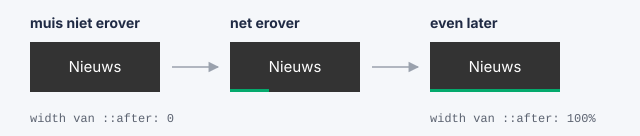
8.7.3. Een dropdown die zacht verschijnt
Bij het dropdown-menu maakte je het menu zichtbaar met display: none en display: block. Maar display kan geen transitie krijgen: het menu springt dus altijd in één keer open.
De oplossing: laat het menu altijd display: block en verberg het op een andere manier, met eigenschappen die wel geleidelijk kunnen veranderen:
-
opacity: de doorzichtigheid, van0(volledig doorzichtig) tot1(volledig zichtbaar); -
visibility:hiddenofvisible. Een tag metvisibility: hiddenis onzichtbaar en je kan er niet op klikken. Bijopacity: 0alleen zou je nog op de onzichtbare links kunnen klikken.
.dropdown-inhoud {
display: block; /* niet meer none */
position: absolute;
min-width: 160px;
background-color: #f9f9f9;
box-shadow: 0px 8px 16px 0px rgba(0, 0, 0, 0.2);
z-index: 1;
opacity: 0; (1)
visibility: hidden;
transform: translateY(-10px); (2)
transition: opacity 0.3s, transform 0.3s, visibility 0.3s;
}
.dropdown:hover .dropdown-inhoud {
opacity: 1; (3)
visibility: visible;
transform: translateY(0);
}| 1 | In het begin is het menu doorzichtig en onzichtbaar. |
| 2 | Het menu staat ook 10px te hoog. |
| 3 | Gaat de muis over de .dropdown, dan wordt het menu zichtbaar en schuift het naar zijn plaats: het lijkt zachtjes naar beneden te glijden. |
Wil je dat het menu niet meteen dichtklapt als je muis even van het menu glijdt? Geef het dichtklappen dan een kleine vertraging. Zet transition-delay: 0.2s; bij .dropdown-inhoud en transition-delay: 0s; bij .dropdown:hover .dropdown-inhoud. Zo opent het menu meteen, maar sluit het pas na 0,2 seconden.
|
8.8. Rekening houden met de bezoeker
Sommige mensen worden misselijk of duizelig van bewegingen op een scherm. Zij kunnen in de instellingen van hun computer of smartphone aangeven dat ze minder beweging willen. Met een media query kan je daar rekening mee houden:
@media (prefers-reduced-motion: reduce) {
* {
transition: none !important; /* alle transities uitschakelen */
}
}Hoe zo’n media query precies werkt, leer je verder bij Media queries.
Gebruik transities altijd om je website duidelijker te maken (de bezoeker ziet wat er verandert), niet om zoveel mogelijk te laten bewegen.
8.9. Transities samengevat
-
Een transitie laat een verandering van een eigenschap geleidelijk gebeuren.
-
Je zet de
transitionop de gewone selector, en laat de eigenschap veranderen met bijvoorbeeld:hover. -
Je hebt minstens een eigenschap en een duur nodig:
transition: background-color 0.3s;. -
Meerdere eigenschappen scheid je met een komma, of je gebruikt
all. -
Met
transition-timing-functionkies je het verloop van de snelheid, mettransition-delayeen vertraging. -
Alleen eigenschappen met een getal of een kleur kunnen geleidelijk veranderen.
displayniet: gebruik daarvooropacityenvisibility. -
Met
transform(translate,scale,rotate) maak je vlotte bewegingen.
| Wat wil je? | CSS |
|---|---|
Een kleur zacht laten veranderen |
|
Een knop laten groeien |
|
Een menu zacht laten verschijnen |
|
Alles laten veranderen met dezelfde snelheid |
|
Een transitie later laten starten |
|
Wil je meer weten? Op w3schools vind je ook het volgende onderwerp: CSS-animaties. Daarmee laat je iets bewegen zonder dat de bezoeker iets moet doen, en met meer dan twee stappen.
9. Media queries
Je website wordt bekeken op een smartphone, een tablet, een laptop en een groot computerscherm. Een navigatiebalk met vijf links naast elkaar past mooi op een laptop, maar op een smartphone is er gewoon geen plaats voor. En drie kolommen tekst naast elkaar worden op een smal scherm onleesbaar.
Met een media query geef je de browser CSS-regels die alleen gelden onder een bepaalde voorwaarde, bijvoorbeeld: "alleen als het venster smaller is dan 768px". Zo pas je de opmaak aan het scherm aan, met dezelfde HTML en hetzelfde CSS-bestand. Een website die dat doet, noemen we een responsive website.
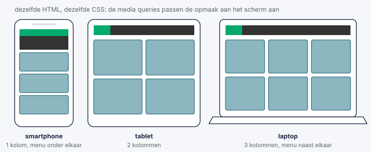
In dit deel leer je:
-
hoe een media query opgebouwd is;
-
welke media types er zijn (scherm, printer, …);
-
welke media features je kan testen (breedte, oriëntatie, donkere modus, …);
-
hoe je je website aanpast aan smartphones, tablets en computers;
-
hoe je kolommen maakt die zich aanpassen aan de breedte van het scherm.
Meer uitleg en voorbeelden: media queries op w3schools
9.1. De syntax van een media query
Een media query begint altijd met @media. Daarna volgt de voorwaarde, en tussen accolades de CSS-regels die alleen gelden als de voorwaarde klopt.
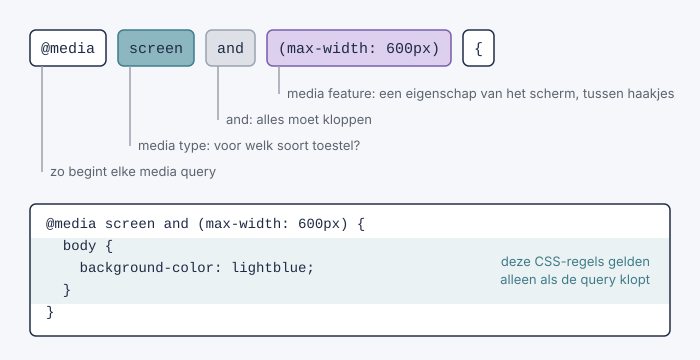
body {
background-color: white; (1)
}
@media screen and (max-width: 600px) { (2)
body {
background-color: lightblue; (3)
}
}| 1 | Gewone CSS: geldt altijd. |
| 2 | De media query: "op een scherm dat hoogstens 600px breed is". |
| 3 | Deze regel geldt alleen als de voorwaarde klopt. Maak je het venster breder dan 600px, dan wordt de achtergrond weer wit. |
Een media query bestaat dus uit:
| Deel | Betekenis | Voorbeeld |
|---|---|---|
|
zo begint elke media query |
|
media type |
voor welk soort toestel? Mag je weglaten. |
|
media feature |
een eigenschap van het toestel of het venster, altijd tussen haakjes |
|
|
de CSS-regels die alleen gelden als de query klopt |
|
Let op de dubbele accolades: de accolades van de media query zelf, en daarbinnen de accolades van elke CSS-regel. Vergeet je de laatste }, dan valt alle CSS die volgt ook in je media query.
9.1.1. Voorwaarden combineren
Je kan meerdere voorwaarden aan elkaar koppelen:
| Schrijfwijze | Betekenis | Voorbeeld |
|---|---|---|
|
en: alle voorwaarden moeten kloppen |
|
|
of: minstens één voorwaarde moet kloppen |
|
|
niet: draait de volledige query om |
|
|
wordt genegeerd door oude browsers die media queries niet kennen |
|
only zie je nog vaak in oudere voorbeelden. Vandaag kennen alle browsers media queries, dus je mag only gerust weglaten.
|
9.1.2. Waar zet je je media queries?
Zet je media queries onderaan je CSS-bestand, na de gewone regels. Een media query geeft een regel niet meer gewicht. Als twee regels even specifiek zijn, wint gewoon de regel die het laatst staat. Staat je media query bovenaan, dan overschrijft de gewone regel eronder hem meteen weer, en lijkt je media query niet te werken.
Je kan een media query ook in de link-tag zetten met het attribuut media. Dan laadt de browser dat CSS-bestand alleen als de voorwaarde klopt:
<link rel="stylesheet" href="stijl.css">
<link rel="stylesheet" href="print.css" media="print">
<link rel="stylesheet" href="smal.css" media="(max-width: 600px)">9.2. Media types
Het media type zegt voor welk soort toestel de CSS bedoeld is.
| Media type | Gebruikt voor |
|---|---|
|
alle toestellen (de standaardwaarde) |
|
schermen: computer, laptop, tablet, smartphone |
|
het afdrukvoorbeeld en de printer |
|
schermlezers die de pagina voorlezen |
Laat je het media type weg, dan is het all. @media (max-width: 600px) is dus hetzelfde als @media all and (max-width: 600px).
Vroeger bestonden er nog meer media types, zoals tv, handheld en projection. Die worden niet meer gebruikt: een tv of smartphone telt vandaag gewoon als screen.
|
Het type dat je naast screen het meest gebruikt, is print. Daarmee bepaal je hoe je pagina eruitziet als iemand ze afdrukt (Ctrl+P):
@media print {
nav, footer, .reclame {
display: none; (1)
}
body {
color: black; (2)
background-color: white;
}
a::after {
content: " (" attr(href) ")"; (3)
}
}| 1 | Een navigatiebalk of reclame heeft geen zin op papier: verberg ze. |
| 2 | Zwarte tekst op een witte achtergrond spaart inkt en is goed leesbaar. |
| 3 | Op papier kan je niet klikken. Met ::after zet je het adres van elke link achter de linktekst. attr(href) haalt de waarde van het attribuut href op. |
| Je ziet het resultaat in het afdrukvoorbeeld van je browser (Ctrl+P). Je hoeft dus niets echt af te drukken. |
9.3. Media features
Een media feature is een eigenschap van het toestel of het venster die je kan testen. Je zet ze altijd tussen haakjes, met een dubbelpunt tussen de naam en de waarde.
| Media feature | Test | Mogelijke waarden |
|---|---|---|
|
de breedte van het venster |
bv. |
|
de hoogte van het venster |
bv. |
|
staat het scherm rechtop of ligt het? |
|
|
heeft de bezoeker een licht of donker thema gekozen? |
|
|
wil de bezoeker minder beweging? |
|
|
kan de bezoeker met een muis ergens over gaan? |
|
9.3.1. min-width en max-width
De features die je het meest gebruikt, zijn min-width en max-width:
-
max-width: 600pxbetekent: het venster is hoogstens 600px breed (600px of smaller); -
min-width: 600pxbetekent: het venster is minstens 600px breed (600px of breder).
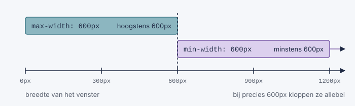
| Het gaat om de breedte van het venster (de viewport), niet om de breedte van het toestel. Maak je je browservenster op je laptop smal, dan gelden dezelfde regels als op een smartphone. Zo kan je het makkelijk uittesten. |
In nieuwere voorbeelden zie je soms ook @media (width >= 600px). Dat betekent hetzelfde als (min-width: 600px) en werkt in alle huidige browsers. In deze cursus gebruiken we min-width en max-width, omdat je die in de meeste voorbeelden (en in Bootstrap) tegenkomt.
|
9.3.2. orientation: staand of liggend
@media (orientation: landscape) {
header {
height: 60px; /* liggend scherm: weinig hoogte, dus een lage header */
}
}landscape betekent eigenlijk gewoon: het venster is breder dan hoog. Ook een gewoon laptopscherm is dus landscape.
9.3.3. prefers-color-scheme: donkere modus
Veel mensen zetten hun smartphone of computer in donkere modus. Met prefers-color-scheme volgt je website die keuze:
body {
background-color: white;
color: #222;
}
@media (prefers-color-scheme: dark) {
body {
background-color: #222;
color: #eee;
}
}| Je hoeft je hele computer niet in donkere modus te zetten om dit te testen. In de ontwikkelaarstools van Chrome (F12) kies je via Ctrl+Shift+P de opdracht "Emulate CSS prefers-color-scheme: dark". |
9.3.4. prefers-reduced-motion en hover
prefers-reduced-motion ken je al van Rekening houden met de bezoeker bij de transities: daarmee schakel je bewegingen uit voor mensen die daar last van hebben.
Met hover kan je testen of de bezoeker een muis heeft. Dat is handig voor je dropdown-menu: op een aanraakscherm kan je niet met de muis "over" een knop gaan.
@media (hover: none) {
.dropdown-inhoud {
display: block; /* geen muis: toon het menu altijd */
opacity: 1; /* ook als je de versie met transitie gebruikt */
visibility: visible;
position: static; /* gewoon in de flow, onder de knop */
}
}9.4. Queries voor verschillende schermgroottes
Het belangrijkste gebruik van media queries: je website aanpassen aan smartphones, tablets en computers.
9.4.1. Stap 1: de viewport-tag
Het trucje van de eerste iPhone bestaat nog altijd: zonder extra informatie doet een smartphone alsof hij een computerscherm is van ongeveer 980px breed. Je media queries voor smalle schermen werken dan niet, want het "venster" is volgens de browser nog altijd 980px breed.
Daarom zet je in de head van elke pagina de viewport-tag:
<head>
<meta charset="UTF-8">
<meta name="viewport" content="width=device-width, initial-scale=1.0"> (1)
<title>Mijn website</title>
<link rel="stylesheet" href="stijl.css">
</head>| 1 | width=device-width: het venster is even breed als het scherm van het toestel. initial-scale=1.0: de browser zoomt niet in of uit. |
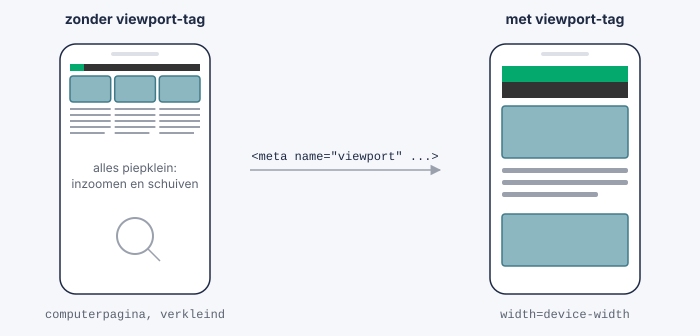
| Vergeet je de viewport-tag, dan lijken je media queries op je laptop perfect te werken, maar op een echte smartphone niet. |
Meer uitleg: de viewport op w3schools
9.4.2. Stap 2: breakpoints kiezen
De breedtes waarbij je opmaak verandert, noemen we breakpoints. Er bestaan geen officiële waarden: je kiest ze zelf, op de plaats waar je pagina er niet meer goed uitziet. Toch gebruiken de meeste websites ongeveer dezelfde groepen:
| Groep | Breedte van het venster |
|---|---|
smartphone |
tot 767px |
tablet |
vanaf 768px |
laptop |
vanaf 992px |
groot scherm |
vanaf 1200px |
Dat zijn ook de breakpoints md, lg en xl die je later bij Bootstrap tegenkomt.
| Kies je breakpoints niet op basis van één bepaald toestel. Er bestaan honderden smartphones en tablets, allemaal met een andere breedte. Kijk liever waar jouw pagina begint te wringen. |
9.4.3. Stap 3: mobile first
Er zijn twee manieren om je media queries te schrijven.
Desktop first (met max-width): je schrijft eerst de CSS voor een groot scherm, en past die met max-width aan voor kleinere schermen.
Mobile first (met min-width): je schrijft eerst de CSS voor een smartphone, en voegt met min-width telkens iets toe voor grotere schermen. Dat is de aanbevolen manier.
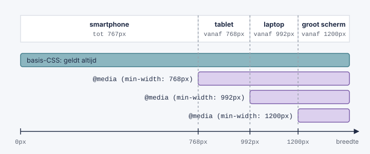
Een voorbeeld: de tekst wordt groter naarmate het scherm breder wordt.
/* basis: smartphone */
body {
font-size: 16px;
padding: 10px;
}
/* tablet en groter */
@media (min-width: 768px) {
body {
font-size: 17px;
padding: 20px;
}
}
/* laptop en groter */
@media (min-width: 992px) {
body {
font-size: 18px;
padding: 20px 60px;
}
}Waarom is mobile first beter?
-
Een smartphone moet de minste CSS verwerken: hij gebruikt alleen de basisregels.
-
De opmaak voor een smal scherm is meestal de eenvoudigste: alles onder elkaar. Je voegt dus dingen toe (kolommen naast elkaar) in plaats van ze weg te halen.
-
Je denkt eerst na over wat echt belangrijk is op je pagina, want op een klein scherm is er weinig plaats.
Let op de volgorde. Bij min-width zet je de media queries van klein naar groot: eerst 768px, dan 992px, dan 1200px. Bij max-width net omgekeerd, van groot naar klein. Anders overschrijft een algemenere regel de specifiekere, omdat de regel die het laatst staat wint.
|
9.4.4. Voorbeeld: een navigatiebalk voor de smartphone
Je horizontale navigatiebalk past op een smartphone niet meer op één rij. Met mobile first zet je de links standaard onder elkaar, en pas vanaf 768px naast elkaar:
nav ul {
list-style-type: none;
margin: 0;
padding: 0;
overflow: hidden;
background-color: #333;
}
nav li a {
display: block;
color: white;
padding: 14px 16px;
text-decoration: none; (1)
}
@media (min-width: 768px) {
nav li {
float: left; (2)
}
}| 1 | Zonder media query zijn de li-tags blok-tags: de links staan onder elkaar, over de volledige breedte. Dat is makkelijk aan te tikken met een vinger. |
| 2 | Vanaf 768px komen de links naast elkaar, zoals je eerder leerde. |
| Je hoeft geen smartphone te gebruiken om te testen. Open de ontwikkelaarstools (F12) en klik op het icoontje met de smartphone en de tablet (of druk op Ctrl+Shift+M). Bovenaan kies je een toestel of sleep je de breedte groter en kleiner. |
Meer voorbeelden: media queries voor responsive webdesign op w3schools
9.5. Queries voor kolommen
Op een groot scherm staat de inhoud vaak in kolommen naast elkaar. Op een smal scherm worden die kolommen te smal om te lezen: daar zet je ze beter onder elkaar.
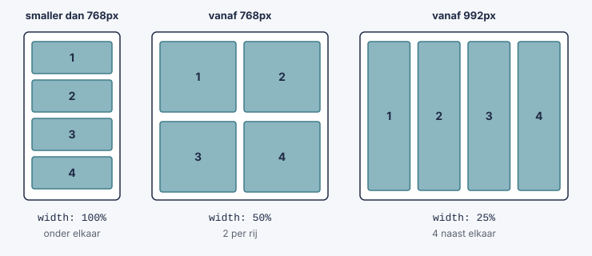
<div class="rij">
<div class="kolom">1</div>
<div class="kolom">2</div>
<div class="kolom">3</div>
<div class="kolom">4</div>
</div>* {
box-sizing: border-box; (1)
}
.rij {
overflow: hidden; (2)
}
.kolom {
float: left; (3)
width: 100%; (4)
padding: 10px;
}
@media (min-width: 768px) {
.kolom {
width: 50%; (5)
}
}
@media (min-width: 992px) {
.kolom {
width: 25%; (6)
}
}| 1 | Normaal komt de padding bovenop de width: een kolom met width: 25% en padding: 10px is dan breder dan 25%, en de vierde kolom past niet meer op de rij. Met box-sizing: border-box zit de padding (en de rand) in de breedte. |
| 2 | Net zoals bij de navigatiebalk: zonder overflow: hidden heeft de .rij geen hoogte meer, omdat de kolommen met float uit de flow gehaald worden. |
| 3 | De kolommen schuiven naar links, naast elkaar, zolang er plaats is. |
| 4 | Basis (smartphone): elke kolom is even breed als de rij, dus ze staan onder elkaar. |
| 5 | Vanaf 768px: twee kolommen per rij. |
| 6 | Vanaf 992px: vier kolommen naast elkaar. |
| Zorg dat de breedtes van de kolommen op één rij samen precies 100% zijn: 4 × 25%, 2 × 50%, 3 × 33.33%, … Is het meer dan 100%, dan schuift de laatste kolom naar een nieuwe rij. |
9.5.1. Kolommen met een verschillende breedte
Je kan ook kolommen maken die niet even breed zijn, zoals een hoofdinhoud met een zijbalk:
<div class="rij">
<main class="inhoud">...</main>
<aside class="zijbalk">...</aside>
</div>.inhoud,
.zijbalk {
float: left;
width: 100%; /* smartphone: onder elkaar */
padding: 10px;
}
@media (min-width: 768px) {
.inhoud {
width: 75%; /* samen 100% */
}
.zijbalk {
width: 25%;
}
}Op een smartphone staat de zijbalk nu onder de hoofdinhoud. Dat is meestal ook wat je wil: de bezoeker ziet eerst het belangrijkste.
In het hoofdstuk Bootstrap ga je zien dat Bootstrap precies dit doet met zijn grid. Een class als col-md-6 betekent: "vanaf 768px is deze kolom de helft van de rij breed". Achter de schermen gebruikt Bootstrap gewoon media queries met min-width.
|
Meer uitleg: een responsive grid op w3schools
9.6. Media queries samengevat
-
Met een media query gelden CSS-regels alleen onder een bepaalde voorwaarde.
-
Een media query bestaat uit
@media, een media type (mag je weglaten), media features tussen haakjes, en de CSS-regels tussen accolades. -
De belangrijkste media types zijn
screenenprint. -
De belangrijkste media features zijn
min-width(minstens) enmax-width(hoogstens). -
Zet de viewport-tag in de
headvan elke pagina, anders werken je media queries niet op een smartphone. -
Werk mobile first: eerst de CSS voor een smartphone, dan met
min-widthaanpassingen voor grotere schermen, van klein naar groot. -
Zet je media queries onderaan je CSS-bestand.
| Wat wil je? | CSS |
|---|---|
Iets aanpassen op een smal scherm |
|
Iets toevoegen vanaf een tablet |
|
Een opmaak alleen voor het afdrukken |
|
Een donker thema |
|
Iets aanpassen op een liggend scherm |
|
Kolommen die onder elkaar komen op een smartphone |
|
10. Flexbox
In de vorige onderdelen zette je tags naast elkaar met inline, inline-block en float, en maakte je kolommen met breedtes in procent. Dat werkt, maar het blijft behelpen: je moet overflow: hidden toevoegen omdat de ouder-tag anders ineenkrimpt, je moet procenten optellen tot precies 100%, en een tag verticaal centreren was een kunstje met position en transform.
Met flexbox (voluit: Flexible Box Layout) los je dat veel eenvoudiger op. Je zegt tegen een tag dat de tags erin flexibel moeten zijn, en daarna bepaal je met een paar eigenschappen hoe ze verdeeld en uitgelijnd worden: naast of onder elkaar, links, rechts of in het midden, even breed of net niet.
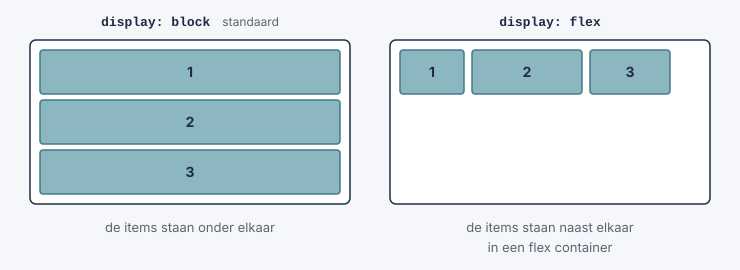
In dit deel leer je:
-
wat een flex container en flex items zijn;
-
wat de hoofdas en de kruisas zijn;
-
in welke richting de items staan (
flex-direction); -
hoe je items verdeelt (
justify-content) en uitlijnt (align-items); -
hoe je een tag in twee regels centreert;
-
hoe je ruimte tussen items zet (
gap) en items naar een volgende rij laat gaan (flex-wrap); -
hoe je items laat groeien om de vrije ruimte op te vullen (
flex); -
hoe je een navigatiebalk en kaartjes met flexbox maakt, en flexbox combineert met media queries.
Meer uitleg en voorbeelden: CSS-flexbox op w3schools
10.1. Flex container en flex items
Flexbox werkt altijd met twee niveaus:
-
de flex container: de ouder-tag, waarop je
display: flexzet; -
de flex items: de tags die rechtstreeks in de container zitten.
<div class="container">
<div class="item">1</div>
<div class="item">2</div>
<div class="item">3</div>
</div>* {
box-sizing: border-box;
}
.container {
display: flex; (1)
background-color: white;
border: 2px solid #333;
}
.item {
background-color: #8cb6c0;
border: 2px solid #3f7a88;
padding: 20px;
}| 1 | Eén regel is genoeg: de drie div-tags staan nu naast elkaar in plaats van onder elkaar. |
Zonder display: flex zijn de drie div-tags blok-tags en staan ze onder elkaar (zie De normale flow). Met display: flex verandert er een hele reeks dingen:
-
de items komen naast elkaar, van links naar rechts;
-
elk item is zo breed als zijn inhoud, ook al is het een blok-tag;
-
alle items zijn even hoog: zo hoog als het hoogste item.
Alleen de tags die rechtstreeks in de container zitten, zijn flex items. Een tag die in een item zit, wordt niet beïnvloed. Wil je die ook flexibel schikken, dan zet je op dat item zelf weer display: flex.
|
De meeste flexbox-eigenschappen zet je op de container, niet op de items. Een veelgemaakte fout is justify-content op een item zetten: dat doet niets. In het overzicht op het einde van dit deel zie je welke eigenschap waar hoort.
|
In de ontwikkelaarstools (F12) zie je naast een flex container het label flex. Klik erop en de browser tekent de container en zijn items. Handig om te zien wat er gebeurt.
|
Probeer het zelf: klik op de knoppen en kijk wat er met de kaartjes gebeurt.
10.2. De twee assen: hoofdas en kruisas
Bij flexbox draait alles om twee richtingen:
-
de hoofdas (main axis): de richting waarin de items achter elkaar staan;
-
de kruisas (cross axis): de richting loodrecht op de hoofdas.
Standaard loopt de hoofdas horizontaal, van links naar rechts, en de kruisas verticaal, van boven naar onder. Verander je de richting van de hoofdas, dan verandert de kruisas mee.
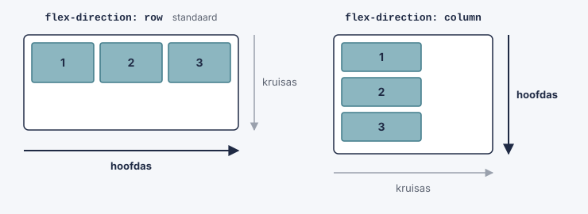
Je moet deze twee assen goed kennen, want bijna elke flexbox-eigenschap werkt op een van beide: justify-content op de hoofdas en align-items op de kruisas.
10.3. flex-direction: de richting van de hoofdas
Met flex-direction (op de container) kies je de richting van de hoofdas:
| Waarde | Betekenis |
|---|---|
|
de items staan naast elkaar, van links naar rechts |
|
naast elkaar, van rechts naar links |
|
onder elkaar, van boven naar onder |
|
onder elkaar, van onder naar boven |
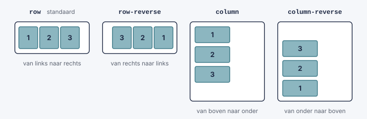
.container {
display: flex;
flex-direction: column;
}Met flex-direction: column staan de items weer onder elkaar, net zoals zonder flexbox. Het verschil is dat je ze nu wel kan verdelen en uitlijnen met de eigenschappen hieronder.
Bij row-reverse en column-reverse verandert alleen wat je op het scherm ziet. De volgorde in de HTML blijft dezelfde, en dat is ook de volgorde waarin een schermlezer de tags voorleest en waarin je met Tab door de links springt. Gebruik de reverse-waarden dus spaarzaam.
|
10.4. justify-content: verdelen op de hoofdas
Zijn de items samen smaller dan de container, dan blijft er vrije ruimte over. Met justify-content (op de container) bepaal je wat er met die ruimte gebeurt, op de hoofdas.
| Waarde | Betekenis |
|---|---|
|
alle items vooraan, de vrije ruimte komt achteraan |
|
alle items achteraan, de vrije ruimte komt vooraan |
|
alle items in het midden, de vrije ruimte is evenveel vooraan als achteraan |
|
het eerste item vooraan, het laatste achteraan, de vrije ruimte komt tussen de items |
|
elk item krijgt evenveel ruimte aan beide kanten: tussen twee items is dat dubbel zoveel als aan de uiteinden |
|
de vrije ruimte is overal even groot: tussen de items en aan de uiteinden |
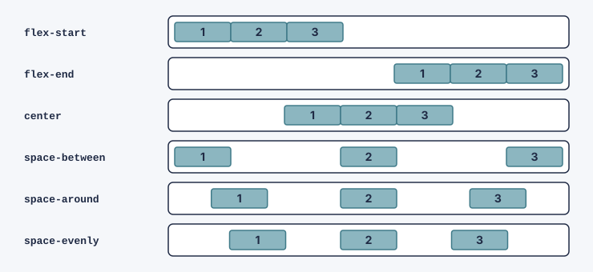
.container {
display: flex;
justify-content: space-between; (1)
}| 1 | Het eerste item staat links, het laatste rechts en de rest zit gelijk verdeeld tussenin. |
justify-content doet pas iets als er vrije ruimte is. Bij flex-direction: column is de hoofdas verticaal, en de container is dan maar net zo hoog als zijn items: er is geen vrije ruimte. Geef de container in dat geval een hoogte, bijvoorbeeld height: 300px;, anders zie je geen verschil.
|
10.5. align-items: uitlijnen op de kruisas
Met align-items (op de container) bepaal je hoe de items staan op de kruisas. Bij een rij is dat dus de verticale richting.
| Waarde | Betekenis |
|---|---|
|
de items worden zo hoog als de container |
|
bovenaan |
|
in het midden |
|
onderaan |
|
de eerste tekstlijn van alle items staat op dezelfde hoogte |
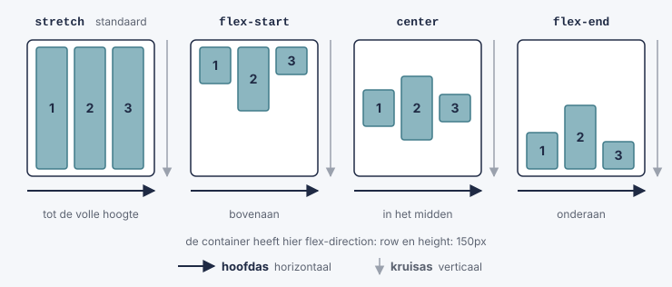
.container {
display: flex;
flex-direction: row; (1)
height: 200px; (2)
align-items: center;
}| 1 | De hoofdas loopt horizontaal. Dit is de standaardwaarde, je mag ze dus weglaten. Zo is de kruisas verticaal en lijnt align-items de items verticaal uit. |
| 2 | De container moet hoger zijn dan zijn items, anders is er op de kruisas niets te verdelen en zie je geen verschil. |
Dat stretch de standaardwaarde is, verklaart waarom items in een rij altijd even hoog zijn, ook als het ene item veel meer tekst heeft dan het andere. Handig voor kaartjes die naast elkaar staan.
Wat justify-content en align-items doen, hangt af van de richting van de hoofdas:
flex-direction |
justify-content werkt |
align-items werkt |
|---|---|---|
|
horizontaal |
verticaal |
|
verticaal |
horizontaal |
Onthoud: justify-content is de hoofdas, align-items is de kruisas. Bij een rij is dat horizontaal en verticaal; bij een kolom is het omgekeerd.
|
10.6. Een tag centreren
Bij het positioneren centreerde je een tag met top, left en transform (zie Een tag centreren met positie). Met flexbox lukt dat met twee regels:
<div class="hero">
<div class="tekst">Ik sta in het midden</div>
</div>.hero {
display: flex;
justify-content: center; (1)
align-items: center; (2)
height: 300px; (3)
background-color: #eee;
}| 1 | Horizontaal centreren: op de hoofdas. |
| 2 | Verticaal centreren: op de kruisas. |
| 3 | Zonder hoogte is de container maar zo hoog als zijn inhoud, en is er niets om in te centreren. |
Het centreren met flexbox is korter en je ziet meteen wat elke regel doet. Daarom gebruiken de meeste websites tegenwoordig flexbox om iets te centreren.
10.7. gap: ruimte tussen de items
Zonder extra opmaak staan de items tegen elkaar. Vroeger gaf je elk item een margin. Met gap (op de container) zet je ruimte tussen de items:
.container {
display: flex;
gap: 20px;
}Het grote verschil met margin: gap zet alleen ruimte tussen de items en niet aan de buitenkant. Je hebt dus geen last van een marge voor het eerste of na het laatste item.
Wil je een andere ruimte tussen de rijen dan tussen de kolommen? Geef dan twee waarden: eerst de ruimte tussen de rijen, dan tussen de kolommen. gap: 10px 30px;
10.8. flex-wrap: naar de volgende rij
Standaard blijven alle items op één rij, ook als ze er eigenlijk niet allemaal naast elkaar passen. Ze worden dan smaller gemaakt. Zijn ze nog te breed, dan loopt de rij uit de container.
Met flex-wrap (op de container) kies je wat er gebeurt als er te weinig plaats is:
| Waarde | Betekenis |
|---|---|
|
alle items blijven op één rij en worden smaller |
|
items die niet meer passen, gaan naar de volgende rij |
|
idem, maar de nieuwe rij komt boven de vorige |
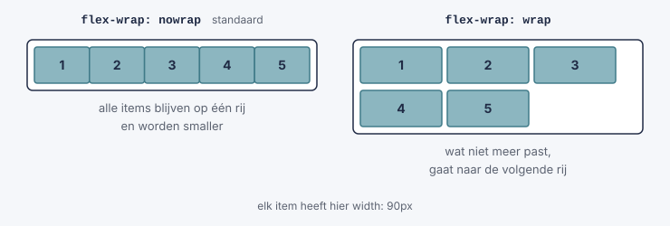
.container {
display: flex;
flex-wrap: wrap;
gap: 10px;
}
.item {
width: 150px;
}Maak je het venster smaller, dan springen de items die niet meer passen naar de volgende rij. Maak je het weer breder, dan komen ze terug naast de andere.
Met flex-flow: row wrap; zet je flex-direction en flex-wrap samen in één regel.
|
Nu kan je alles uitproberen wat je tot hier zag: kies een richting, verdeel en lijn de items uit, laat ze naar een volgende rij gaan en pas de ruimte aan. Onder de demo staat telkens de CSS die erbij hoort. De knop Centreren toont het centreren met justify-content en align-items, en Menubalk een navigatiebalk met space-between.
Voorspel eerst wat er zal gebeuren en klik pas daarna. Zet bijvoorbeeld flex-direction op column en probeer justify-content en align-items. Let op de regel height: 360px onder de demo: zonder die hoogte zou justify-content bij column niets doen.
|
10.9. flex: items laten groeien
Een item is standaard zo breed als zijn inhoud, en de vrije ruimte blijft leeg. Met flex (nu op een item) laat je een item een deel van die vrije ruimte opeisen.
.item {
flex: 1;
}Geef je alle items flex: 1, dan wordt de vrije ruimte gelijk verdeeld en zijn ze even breed. Het getal is een soort gewicht: een item met flex: 2 krijgt twee keer zoveel van de vrije ruimte als een item met flex: 1.
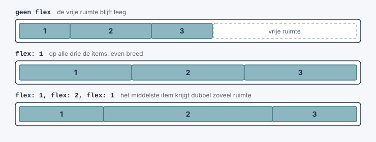
Een bekend gebruik is een pagina met een zijbalk met een vaste breedte, en een hoofdinhoud die de rest van de breedte inneemt:
<div class="pagina">
<aside class="zijbalk">Zijbalk</aside>
<main class="inhoud">Hoofdinhoud</main>
</div>.pagina {
display: flex;
gap: 20px;
}
.zijbalk {
width: 200px; (1)
}
.inhoud {
flex: 1; (2)
}| 1 | De zijbalk is altijd 200px breed. |
| 2 | De hoofdinhoud krijgt alle vrije ruimte die overblijft. Bij de kolommen met float moest je de procenten zelf uitrekenen; hier is dat niet meer nodig. |
flex is een korte schrijfwijze voor drie eigenschappen. Voor deze cursus volstaat flex: 1, maar je ziet ze soms apart staan.
|
| Eigenschap | Betekenis | Standaard |
|---|---|---|
|
hoeveel van de vrije ruimte het item mag opeisen |
|
|
hoeveel het item mag krimpen als er te weinig plaats is |
|
|
de startbreedte van het item, voor de ruimte verdeeld wordt |
|
flex: 1 betekent flex: 1 1 0%: grow 1, shrink 1 en basis 0%.
In de volgende demo zie je hoe de vrije ruimte verdeeld wordt. De container is 700px breed. Een item zonder flex blijft 100px breed, items met flex delen de rest. De demo rekent de vrije ruimte voor je uit en toont hoeveel ruimte elk deel krijgt.
Voorspel eerst de breedtes van A, B en C voor je op een knop klikt. Vul daarna zelf getallen in: wat gebeurt er als je bij alle drie flex: 3 zet?
|
10.10. Flexbox in de praktijk
10.10.1. Een navigatiebalk met flexbox
In Horizontale navigatiebalk maakte je een balk met float. Met flexbox wordt dat korter, en de link "Aanmelden" helemaal rechts zetten is een stuk eenvoudiger.
<nav>
<ul>
<li><a class="actief" href="index.html">Home</a></li>
<li><a href="nieuws.html">Nieuws</a></li>
<li><a href="contact.html">Contact</a></li>
<li class="rechts"><a href="aanmelden.html">Aanmelden</a></li>
</ul>
</nav>nav ul {
display: flex; (1)
list-style-type: none;
margin: 0;
padding: 0;
background-color: #333;
}
nav li a {
display: block; (2)
color: white;
padding: 14px 16px;
text-decoration: none;
}
nav li a:hover {
background-color: #111;
}
nav li a.actief {
background-color: #04aa6d;
}
.rechts {
margin-left: auto; (3)
}| 1 | De li-tags komen naast elkaar. Je hebt geen float en geen overflow: hidden meer nodig: de ul blijft vanzelf rond zijn items passen. |
| 2 | Zoals bij de versie met float: het hele vak is klikbaar en kan padding krijgen. |
| 3 | Een margin-left: auto op een flex item duwt het zo ver mogelijk naar rechts: alle vrije ruimte gaat naar die marge. Zo staat "Aanmelden" helemaal rechts, zonder float: right. |
10.10.2. Kaartjes die zich aanpassen
Met flex-wrap en een slimme flex maak je kaartjes die zich aan de breedte van het scherm aanpassen, zonder één media query.
<div class="kaarten">
<div class="kaart"><h3>Wiskunde</h3><p>Rekenen met getallen en vormen.</p></div>
<div class="kaart"><h3>Informatica</h3><p>Programmeren en webdesign.</p></div>
<div class="kaart"><h3>Frans</h3><p>Een tweede taal leren.</p></div>
<div class="kaart"><h3>Engels</h3><p>Lezen, schrijven en spreken.</p></div>
</div>.kaarten {
display: flex;
flex-wrap: wrap; (1)
gap: 16px; (2)
}
.kaart {
flex: 1 1 200px; (3)
border: 1px solid #ccc;
border-radius: 8px;
padding: 16px;
}| 1 | Kaartjes die niet meer naast de andere passen, gaan naar de volgende rij. |
| 2 | Ruimte tussen de kaartjes, zowel naast elkaar als onder elkaar. |
| 3 | Een kaartje wil 200px breed zijn (flex-basis) en mag groeien om de rij op te vullen (flex-grow). |
Op een breed scherm staan de vier kaartjes naast elkaar. Maak je het venster smaller, dan springt eerst het laatste kaartje naar een nieuwe rij, en op een smartphone staan ze onder elkaar. De browser rekent zelf uit hoeveel kaartjes er op een rij passen.
Staat er op de laatste rij maar één kaartje, dan groeit dat over de volledige breedte. Wil je dat niet? Geef de kaartjes een max-width, bijvoorbeeld max-width: 300px;.
|
10.10.3. Flexbox en media queries
In Queries voor kolommen maakte je kolommen met float en procenten. Met flexbox schakel je met één eigenschap tussen onder elkaar en naast elkaar. We werken weer mobile first: eerst de smartphone, dan een media query voor grotere schermen.
<div class="pagina">
<main class="inhoud">Hoofdinhoud</main>
<aside class="zijbalk">Zijbalk</aside>
</div>.pagina {
display: flex;
flex-direction: column; (1)
gap: 16px;
}
@media (min-width: 768px) {
.pagina {
flex-direction: row; (2)
}
.inhoud {
flex: 1; (3)
}
.zijbalk {
width: 250px; (4)
}
}| 1 | Basis (smartphone): de tags staan onder elkaar. |
| 2 | Vanaf 768px staan ze naast elkaar. |
| 3 | De hoofdinhoud neemt alle vrije ruimte. |
| 4 | De zijbalk is 250px breed. |
Je gebruikt dezelfde HTML, maar de indeling past zich aan het scherm aan.
10.11. Flexbox samengevat
-
Zet je
display: flexop een tag, dan wordt die een flex container en worden de tags die er rechtstreeks in zitten flex items. -
Een flex container heeft een hoofdas (standaard horizontaal) en een kruisas (standaard verticaal). Met
flex-directionkies je de richting van de hoofdas. -
justify-contentverdeelt de items op de hoofdas,align-itemslijnt ze uit op de kruisas. -
Beide hebben pas effect als er vrije ruimte is: geef de container een hoogte als je verticaal wil verdelen of uitlijnen.
-
Met
gapzet je ruimte tussen de items, metflex-wrap: wraplaat je items naar een volgende rij gaan. -
Met
flex: 1op een item laat je het de vrije ruimte opvullen.
| Eigenschap | Zet je op | Wat doet ze? |
|---|---|---|
|
container |
maakt van de tag een flex container |
|
container |
de richting van de hoofdas: |
|
container |
verdeelt de items op de hoofdas |
|
container |
lijnt de items uit op de kruisas |
|
container |
laat items naar een volgende rij gaan |
|
container |
ruimte tussen de items |
|
item |
laat het item groeien om de vrije ruimte op te vullen |
|
item |
lijnt één item anders uit dan de rest (met dezelfde waarden als |
|
item |
verandert de volgorde van de items |
| Wat wil je? | CSS |
|---|---|
Tags naast elkaar zetten |
|
Tags onder elkaar, maar met flexbox |
|
Ruimte tussen de tags |
|
Eerste tag links, laatste rechts |
|
Een tag centreren |
|
Tags naar een volgende rij laten gaan |
|
Een tag de rest van de breedte geven |
|
Een tag naar rechts duwen |
|
In het volgende hoofdstuk, over Bootstrap, kom je dezelfde ideeën terug als kant-en-klare classes: d-flex is display: flex, justify-content-between is justify-content: space-between, align-items-center is align-items: center en gap-3 is een gap.
Alle demo’s staan ook samen op een eigen pagina: Flexbox-demo. Wil je nog meer oefenen? Het spel Flexbox Froggy laat je met flexbox-code kikkers naar hun waterlelie brengen. Een volledig overzicht van alle eigenschappen vind je in A Complete Guide to Flexbox (Engels). Flexbox schikt tags in één richting; voor rijen en kolommen tegelijk, een raster, bestaat grid: CSS grid op w3schools.
11. Fouten opsporen
Open de ontwikkelaarstools (F12) en selecteer een tag. Rechts zie je:
-
welke CSS-regels van toepassing zijn, en welke doorstreept zijn omdat een andere regel wint;
-
hoeveel ruimte er binnen de rand (
padding) en buiten de rand (margin) van de tag is.
Je kan er waarden aanpassen en meteen het resultaat zien. Let op: die aanpassingen worden niet opgeslagen. Neem ze daarna over in je CSS-bestand.
Veelgemaakte fouten:
-
een puntkomma of accolade vergeten;
-
het punt (
.) vergeten voor een class-selector; -
een verkeerd pad in de
link-tag; -
een spatie tussen getal en eenheid:
20 pxwerkt niet,20pxwel.